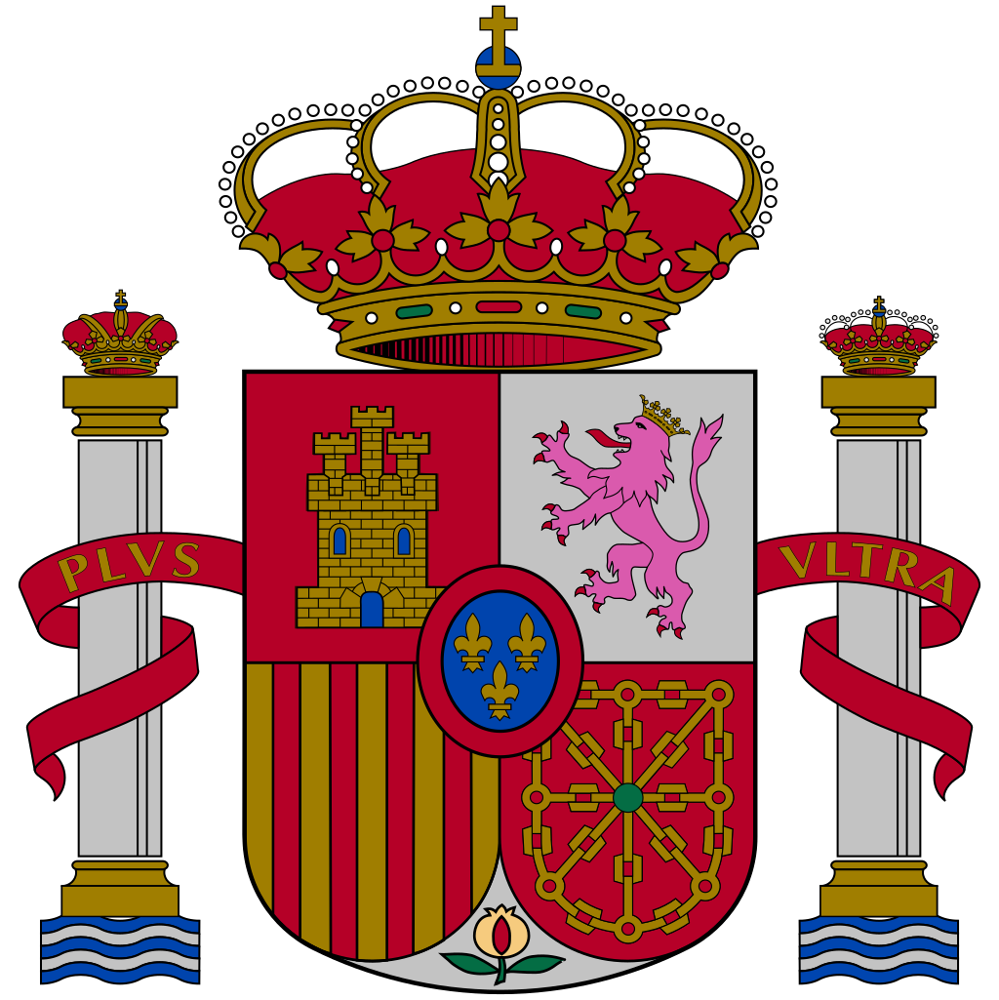
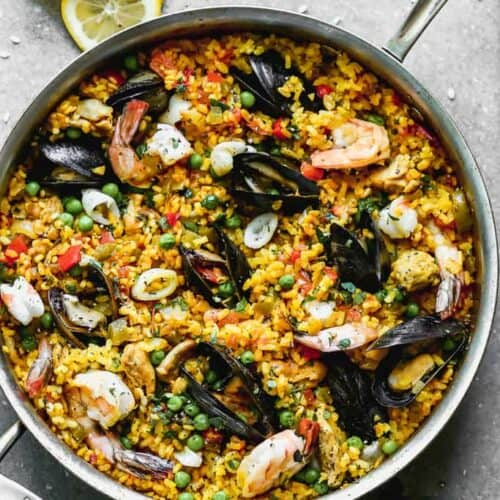

Spanish Paella


A Spanish dish originating from Valencia that has spread around the world in different variations. In Valencia, the recipe incorporates saffron as well as fish and chicken, though other meats can be used such as rabbits!
Ingredients
- Extra Virgin Olive Oil: 1/4 cup
- Onion, diced: 1
- Bell Pepper, diced: 1
- Garlic, cloves: 4
- Roma Tomatoes, very finely diced: 3 OR Tomato Sauce: 8 oz.
- Bay Leaf
- Paprika, sweet or smoked: 1 teaspoon
- Saffron Threads: 1 pinch
- Salt & Pepper
- White Wine: 1/4 cup
- Chicken Thighs, boneless, skinless, cut into pieces: 4
- Spanish Rice: 2 cups
- Chicken Broth: 5 cups
- Frozen Peas: 1/2 cup
- Jumbo Shrimp: 1/2 Ib. OR Prawns, peeled, tail on: 12
- Mussels, cleaned: 1/2 Ib or 10-12
- Calamari Rings: 8 oz.
- Lemons, for garnish
Steps
- Add olive oil to a skillet over medium heat. Add the onion, bell peppers and garlic and cook until onion is translucent. Add chopped tomato, bay leaf, paprika, saffron salt and pepper. Stir and cook for 5 minutes. Add white wine and cook for 10 minutes. Taste and add salt if needed.
- Add chicken pieces, 2 tablespoons chopped parsley and rice to the pot. Cook for 1 minute.
- Pour the broth slowly all around the pan and jiggle the pan to get the rice into an even layer. (Do not stir the mixture going forward!).
- Bring mixture to a boil. Reduce heat to medium low. Give the pan a gentle shake back and forth just once or twice during cooking. (We don't ever stir the rice, so that a crispy crust forms at the bottom, called a socarrat).
- Cook for about 15-18 minutes (uncovered), then nestle the shrimp, mussels and calamari into the mixture, sprinkle peas on top and continue to cook (without stirring) for about 5 more minutes. Watch for most of the liquid to be absorbed and the rice at the top nearly tender. (If your rice is still not cooked, add ¼ cup more water or broth and continue cooking).
- Remove pan from heat and cover pan with a lid or tinfoil. Place a kitchen towel over the lid and allow to rest for 10 minutes.
- Garnish with fresh parsley and lemon slices. Serve.
Source: Spanish Paella